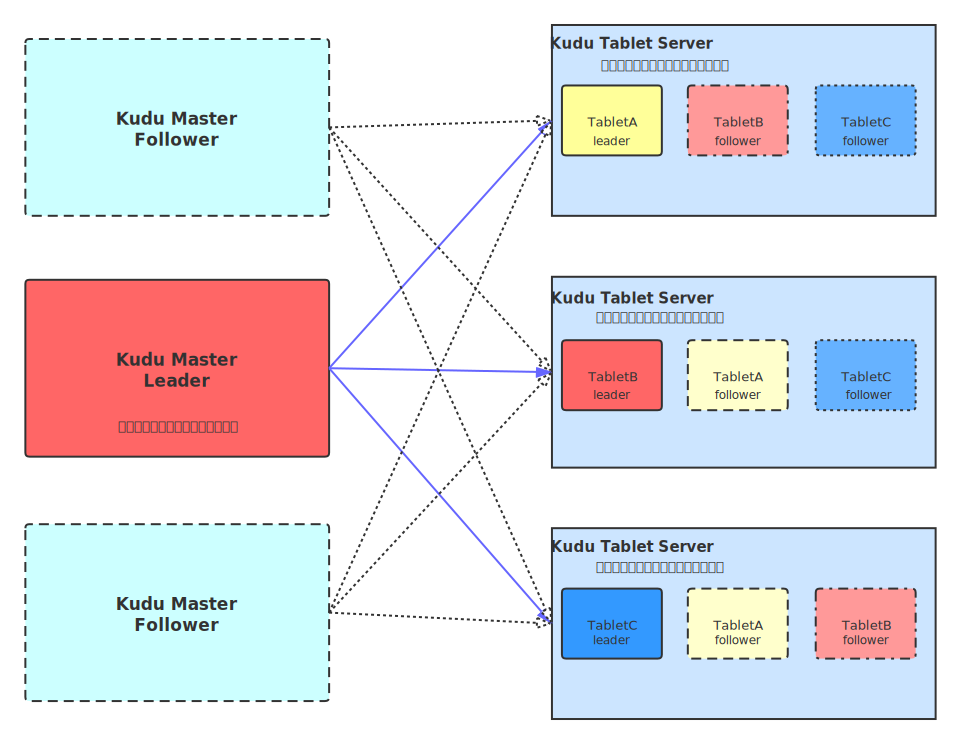

8. Kudu¶
8.1. Overview¶
Apache Kudu是由Cloudera开源的存储引擎，可以同时提供低延迟的随机读写和高效的数据分析能力。它是一个融合HDFS和HBase的功能的新组件
静态数据
以HDFS 引擎作为存储引擎，适用于高吞吐量的离线大数据分析场景
这类存储的局限性是数据无法进行随机的读写
动态数据
HBase这类列式存储的数据引擎，支持海量数据的随机读写
由于底层是HDFS所以批量读取取决于HDFS，无法实现批量数据的分析
Kudu的定位是Fast Analytics on Fast Data，是一个既支持随机读写、又支持OLAP 分析的大数据存储引擎
Kudu是介于HDFS和HBase之间的产品，支持数据随机读写与OLAP分析
8.1.1. 应用场景¶
1．Strong performance for both scan and random access to help customers simplify complex hybrid architectures（适用于那些既有随机访问，也有批量数据扫描的复合场景）
2．High CPU efficiency in order to maximize the return on investment that our customers are making in modern processors（高计算量的场景）
3．High IO efficiency in order to leverage modern persistent storage（使用了高性能的存储设备，包括使用更多的内存）
4．The ability to upDATE data in place, to avoid extraneous processing and data movement（支持数据更新，避免数据反复迁移）
5．The ability to support active-active replicated clusters that span multiple data centers in geographically distant locations（支持跨地域的实时数据备份和查询）
8.2. 架构¶
Kudu 中存在两个角色：
Mater Server：负责集群管理、元数据管理等功能
Tablet Server：负责数据存储，并提供数据读写服务
为了实现分区容错性，跟其他大数据产品一样，对于每个角色，在 KUDU 中都可以设置特定数量（3 或 5）的副本。各副本间通过 Raft 协议来保证数据一致性。Raft 协议与 ZAB 类似，都是 Paxos 协议的工程简化版本

8.2.1. 数据类型¶
KUDU 的数据模型与传统的关系型数据库类似，一个 KUDU 集群由多个表组成，每个表由多个字段组成，一个表必须指定一个由若干个（>=1）字段组成的主键
Kudu中的每个字段类型都是强类型的，这与HBase的表中数据类型有所不同，HBase中所有的数据类型都是Bytes，Kudu中可以允许不同的字段设定不同的数据类型，这样就使得针对不同的类型可以使用不同的编码，从而节省了存储空间。
8.2.2. 存储策略¶
KUDU 是一个列式存储的存储引擎
Table（表）：一张表table是数据存储在Kudu的从节点tablet server中。表具有 schema 和全局有序的primary key（主键）。table 被分成称为 tablets 的 segments。
Tablet：
1）、一个 tablet 是一张 table连续的segment，tablet是Kudu表的水平分区，类似于googleBigtable的tablet，或者HBase的region。
2）、每个tablet存储着一定连续range的数据（key），且tablet两两间的range不会重叠。一张表的所有tablet包含了这张表的所有key空间。与其它数据存储引擎或关系型数据库中的 partition（分区）相似。
3）、给定的tablet 冗余到多个 tablet server 服务器上，并且在任何给定的时间点，其中一个副本是leader tablet，其他的副本为follower tablet。
4）、每个Tablet同时只有一个leader副本，这个副本对用户提供修改操作，然后将修改结果同步给follower。
5）、Follower只提供读服务，不提供修改服务。副本之间使用raft协议来实现HighAvailability，当leader所在的节点发生故障时，followers会重新选举leader。Raft协议的另一个作用是实现Consistency。Client对leader的修改操作，需要同步到N/2+1个节点上，该操作才算成功
列式存储的数据库很适合于 OLAP 场景，其特点如下：
优势：查询少量列时 IO 少，速度快；数据压缩比高；便于查询引擎性能优化：延迟物化、直接操作压缩数据、向量化执行。
劣势：查询列太多时性能下降（KUDU 建议列数不超过 300）；不适合 OLTP 场景
8.2.3. 分区策略¶
范围分区（Range Partitioning）
方便分区扩展
但是容易造成一个范围内数据量大的话落在同一个Tablet上，造成写大压力大
哈希分区（Hash Partitioning）
数据的写入会被散落在各个Tablet上，数据写入的速度快
但是不方便分区的横向扩展
不利于数据顺序读的场景，造成顺序读数据的吞吐量低
多级分区
Kudu允许用户对一个表指定一个范围分区和多个Hash分区